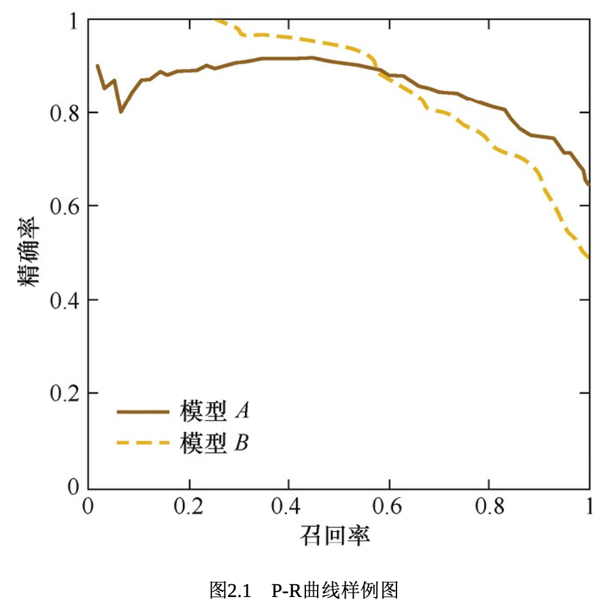

Evaluation Metrics and Their Limitations¶
When doing model evaluation, the classification / sort / regression problems seems to always use different metrics for evaluation.
Accuracy and Its Limitations¶
The accuracy only measures the number of correct labels divided by the number of total labels. This can potentially lead to a issue when the number of labels are limited in the dataset. When negative samples composed 99% of the data, if every label is a negative one, we still get 99% accuracy. So, if we use more effective mean accuracy that quantifies the mean accuracy under each category, it would be a better metrics to work with.
Precision & Recall and Their Balance¶
Concept of Precision & Recall¶
Now we need to introduce the concept of precision and recall.
Precision cares about the correctness of positive predictions, whereas recall cares about coverage of actual positives. Precision and recall trade off via the decision threshold. In a binary classification problem:
The F1 score is their harmonic mean:
This value ranges from 0 to 1 and penalizes imbalance, thus when either precision or recall is low, F1 drops sharply. F1 should be used when false positives and false negatives matter about equally, especially with imbalanced classes.
Confusion Matrix Implementation¶
import numpy as np
true_labels = np.array([0, 0, 1, 1, 0, 1, 0, 1, 1, 1])
predicted_labels = np.array([0, 1, 0, 1, 0, 1, 1, 1, 1, 0])
TP = np.sum((predicted_labels == 1) & (true_labels == 1))
TN = np.sum((predicted_labels == 0) & (true_labels == 0))
FP = np.sum((predicted_labels == 1) & (true_labels == 0))
FN = np.sum((predicted_labels == 0) & (true_labels == 1))
print("Confusion Matrix:\n TP: ", TP, "\tFP: ", FP, "\n FN: ", FN, "\tTN: ", TN)
'''Output:
Confusion Matrix:
TP: 4 FP: 2
FN: 2 TN: 2
'''
Precision & Recall in Ranking / Retrieval Variants¶
def precision_at_k(ground_truth_set, ranked_list, k):
return len(set(ranked_list[:k]) & ground_truth_set) / k
# when there are more than one query / user / example that we would like to test on our predictions, we use the weighted average of the precision_at_k.
def mean_precision_at_k(ground_truth_sets, ranked_lists, k):
# ground_truth_sets and ranked_lists are aligned lists
return sum(precision_at_k(g, r, k) for g, r in zip(ground_truth_sets, ranked_lists)) / len(ground_truth_sets)
- Precision@k for one case \(q\) (one list).
- Mean Precision@k average of those values over all cases \(q \in Q\).
Example: when dealing with video vague search functionality, it seems that the search ranking model can return the top 5 precision pretty high, however, the user in reality still cannot find the videos they want, especially those unpopular ones. Where does this problem coming from?
Root cause analysis: Coming back to the example above, the top 5 precision being really high, meaning that the model can get the true positive results on a pretty good level with a certain set of positive predictions; however, when it comes down to cases where users would like to find not so popular videos, the precision of ranks can be rather no so useful as the user is looking for not so well-defined labels, hence the good precision of popular videos would not be helpful for this case as model is not providing all the relevant videos to the user and this is a problem of not so good recall rate. Let's say for the top 5 results, the precision@5 to be 100%, meaning that the correctness of the positive results is pretty higher, however, the recall@5 can still be 5%, meaning that only predicted 5 true positives although there are 100 actual positives involved. When doing model evaluation, it means that we should be focusing on both precision and recall, and also using different top N values for observations.
Hence, in general, when people evaluate the goodness of a sort algorithm, they also look at the P-R curve, where in this curve, the x-axis corresponds to recall rate whereas the y-axis corresponds to precision rate.
Use of P-R Curve for Model Evaluation and Threshold Choice¶

Each data point on the curve corresponds to a precision-recall combination at a certain threshold for True samples of choice, for example 0.95 / 0.9, etc. The closer to the origin (0,0) point, the bigger the threshold is.
How to Pick the Threshold in Practice¶
- Capacity-constrained: If reviewers can handle 300 cases/day, pick the smallest threshold that yields ≈300 flags/day; report the resulting (Precision, Recall).
- Recall target: If policy demands ≥95% recall, choose the lowest threshold achieving that, then report precision (and expected review load).
- Cost-based: Minimize \(\text{Cost}_{\text{false positives}}\cdot{\text{False Positives}}+\text{Cost}_{\text{false negatives}}\cdot{\text{False Negatives}}\) over thresholds.
Also report AUPRC to compare models independent of a single threshold (higher is better, especially with class imbalance).
Root-Mean Squared Errors (RMSE)¶
Root-mean squared error has long been used as the metric for evaluating the regression model.
Example: as a streaming company, one would say that prediction of traffic for each series can be really important when it comes down to ads bidding and user expansion. One would like to use a regression model to predict the traffic trend of a certain series, but whatever regression model that one uses, the RMSE metric ends up being really high. But, in reality, the model 95% of the time predict error is less than 1%, with really good prediction results. What might be the reason of this extraordinarily good results?
Root cause analysis: From what the example, says there are two possible ways for the RMSE to be ineffective: 1) n being really small hence at this moment, the calculated error cannot be measurable anymore, 2) all the errors between actual value and predicted value are over- / under-predicting that the summation at the end being really high, however, in reality it is not the case and 3) one outlier being really off when comparing with other data points, it is contaminating the RMSE to be really big. Coming back to the question, as 95% of the time to model has really good prediction error hence it means the other 5% of the time the model can be really off with big outliers and it could happen when a series with small traffic / newly come-out / newly accoladed could produce this big error.
How to solve: 1) When we think these outliers are noises, then we need to filter them out at the early stage when doing data cleaning, 2) If we do not think they are noises, then we need to further improve the prediction capability of our algorithm so that we could somehow model the formation of these outliers. and 3) We could also use a better metric for the model evaluation. There are indeed better evaluation metrics that are of better robustness than RMSE, for example, Mean Absolute Percentage Error (MAPE):
Mean Absolute Percentage Error¶
When comparing with RMSE, MAPE normalizes the error rate of each data point to mitigate the outlier impact from the absolute error.
ROC Curves¶
Binary classifiers are the mostly used and applied classifier in the ML industry. There are a lot of different metrics that one could use for evaluate the binary classifiers, including precision, recall, F1 score and P-R curve. But these metrics are only reflecting one aspect of the model. Hence, ROC curves can be of really good use.
What is a ROC Curve¶
ROC curves are called receiver Operating Characteristic Curves, which established from the military field and are often used in the medical industry as well. This curve's x-axis is the false positive rate, whereas the y-axis is the true-positive rate.
Example: There are 10 patients, where in there are 3 positive cancer patients, and the rest are negative patients. The hospital decides to do diagnosis on these customers and figured that 2 are true positive cancer patients. In this case:
How to Draw a ROC Curve¶
- What is needed
- True labels \(y \in \{0,1\}\)
- A score for the positive class per item (probability or decision score).
| Sample Number | True Label | Model Output Probability as Positive |
|---|---|---|
| 1 | Positive | 0.9 |
| 2 | Positive | 0.8 |
| 3 | Negative | 0.7 |
From this example, we could then plot out the true positive rate (TPR) as the x-axis and false positive rate (FPR) as the y-axis for the curve, hence getting the ROC curve. There is a more direct way to plot the ROC curve as well:
- Getting the number of Positive & Negative samples, i.e. assuming number of positive samples to be P and negative to be N.
- Getting the x-axis labels to be the count of negative samples, and y-axis labels to be the count of positive samples, then use the model output probability to do sorting of the samples
- Now draw the ROC curve from origin, whenever seeing a positive sample to draw a vertical line segment of +1 increment on y-axis, whenever seeing a negative sample then we draw a horizontal line segment along the x-axis until we reach the final sample with curve ending at (1,1).
from matplotlib import pyplot as plt
from numpy import random
truth_labels = [1 if random.rand() > 0.6 else 0 for _ in range(500)]
# we generate some random predictions that would normally be obtained from the model
# If a predicted probability is higher than the threshold, it is considered to be a positive outcome
predicted_probs = [max(0, min(1, random.normal(loc=label, scale=0.3))) for label in truth_labels]
def roc_curve(truth_labels, predicted_probs):
thresholds = [0.1 * i for i in range(11)]
tprs, fprs = [], []
for threshold in thresholds:
tp = fp = tn = fn = 0 # initialize confusion matrix counts
# for each prediction
for i in range(len(truth_labels)):
# calculate confusion matrix counts
if predicted_probs[i] >= threshold:
if truth_labels[i] == 1:
tp += 1
else:
fp += 1
else:
if truth_labels[i] == 1:
fn += 1
else:
tn += 1
# track the TPR and FPR for this threshold
tprs.append(tp / (tp + fn)) # True Positive Rate (TPR)
fprs.append(fp / (tn + fp)) # False Positive Rate (FPR)
return tprs, fprs
tprs, fprs = roc_curve(truth_labels, predicted_probs)
plt.plot(fprs, tprs, marker='.')
plt.show()
How to Calculate the AUC (Area Under Curve)?¶
As simple as it could be, AUC is the area under the ROC curve, which can quantitatively reflect the model performance based on ROC curve. It is simple to calculate AUC along ROC x-axis. Due to that ROC curve tends to be above y=x, AUC values are usually between 0.5-1. The bigger the AUC is, the better the classifier is as the more likely that the classifier put the true positive samples at the front.
def compute_aucroc(tprs, fprs):
aucroc = 0
for i in range(1, len(tprs)):
aucroc += 0.5 * abs(fprs[i] - fprs[i - 1]) * (tprs[i] + tprs[i - 1])
return aucroc
aucroc = compute_aucroc(tprs, fprs)
print(f"The AUC-ROC value is: {aucroc}") # The AUC-ROC value is: 0.9827272125066242
We have touched on the P-R curve for evaluating classification or sort algorithms. Comparing with P-R curve, there is one important character of ROC curve, which is that when positive / negative sample distribution change significant, the ROC curve shape could stay rather consistently whereas the P-R curve shape would be changing. This makes the ROC curve to mitigate the interference from diverse test sets and could more objectively evaluate the algorithm. In reality, when positive counts are much less than the negative counts, when switching dataset the data can be of big change, so a stable and robust evaluation would be important. Hence, usually ROC can be used in more variety of scenarios and could be utilized in sort / recommendation / ads.
Use of Cosine Distance¶
How to evaluate the distance between samples can also define the optimization target and training method. In ML problems, we usually take the features to be of vector form, so when analyzing the two feature vector similarity, we could use cosine similarity. The cosine similarity can range from -1 to 1, where when two vectors are exactly the same, the cosine similarity becomes 1. Hence, when looking at distances, 1-cosine similarity becomes the cosine distance. Overall, the cosine distance is [0,2] and the same two vectors their cosine distance becomes 0.
Definition of Euclidean Distance & Cosine Distance¶
Euclidean Distance For vectors \(x,y\in\mathbb{R}^d\):
- What it measures: straight-line (L2) distance in space.
- Sensitive to scale/magnitude: doubling a vector doubles distances.
- Squared form: sometimes use \(\|x-y\|^2\) (no square root) for speed/convexity.
Cosine Distance Start with cosine similarity:
Cosine distance (common definition): \(\(d_{\text{cos}}(x,y)=1-\text{cos\_sim}(x,y)\in[0,2]\)\)
- What it measures: difference in direction (angle) only.
- Scale-invariant: multiplying a vector by a positive constant doesn't change it.
Overall, on unit vectors, Euclidean and cosine distances are monotonic transforms. Also, on a unit circle, one would see: \(\(\|A-B\|=\sqrt{2(1-cos(A,B))}\)\)
- When to use which
- Use Euclidean when magnitude matters (e.g., real spatial distances, continuous features with meaningful scales).
- Use Cosine when orientation matters more than length (e.g., text/image embeddings, TF-IDF vectors).
When to Use Cosine Similarity but Not Euclidean Distance?¶
For two vectors A and B, when their cosine similarity are being defined as \(cos(A,B)=\frac{A\cdot B}{\|A\|_2 \|B\|_2}\), i.e. the cosine of angle between two vectors, we thus measure the angular distance between them, rather than the absolute magnitude, with the range being [-1,1]. When a pair of text being very different in length, but with similar content, if using Euclidean distance, one can think their distance being pretty big whereas when using cosine similarity, the angle between the two can be rather small, hence giving high similarity. In text, visual, video, image industries, when the objective has high dimensions, cosine can still retain its character of [-1,1] whereas the Euclidean distance number can be really big.
Overall, Euclidean distance measures the absolute difference between numbers whereas the cosine distance measures the directional relative difference.
Taking an example of measuring user behavior of watching two different TV series: - user A's watch vector = (0,1) - user B's watch vector = (1,0)
It is obvious that the cosine distance between the two can be really big whereas their Euclidean distance is small.
When measuring user A/B preference, we focus more on relative difference, hence we should be using the cosine distance whereas when we are analyzing user login frequency or activity, we should be using Euclidean distance instead as the cosine distance would think two users of vector (1,10) and (10,100) are more similar to each other.
Is Cosine Distance a Strictly Defined Distance?¶
No, it is not strictly defined as it satisfies the Non-negativity & identity (strictness), symmetry but does not satisfy the triangle inequality. A use case of this question is that when reading the word vector of comedy and funny and also happy and funny, their cosine distance is < 0.3, whereas the distance between comedy and happy is 0.7.
Related Topics¶
- Evaluation Methods - How to apply these metrics
- Hyperparameter Tuning - Using metrics for model selection
- Feature Engineering - How metrics affect feature selection